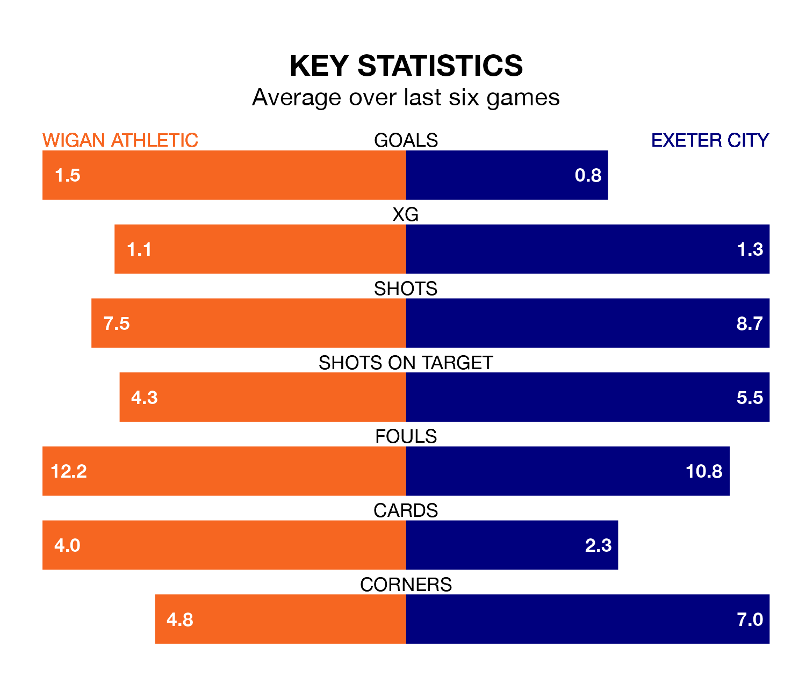

Wigan Athletic host Exeter City on Saturday at the DW Stadium in EFL League One.
In their last league match, on February 3, Wigan beat Peterborough United 3-2 away, with goals from Thelo Aasgaard (two) and Josh Magennis.
Exeter also won, 2-1 at home against Peterborough United on Tuesday, with Jadel Katongo (own goal) and Nicholas Bilokapic (own goal) on the scoresheet.
With 23 goals in 31 games so far this season, Exeter are the league's third-lowest scorers with 0.7 goals per game. And they are conceding more than average, letting in 42 goals at a rate of 1.4 per game.
Wigan, meanwhile, are above average scorers, with 1.4 goals per game, compared to a league average of 1.3. They have conceded 1.2 goals per game.
In Viljami Sinisalo, City can rely on one of the league's safest pair of hands. He has kept 10 clean sheets in his 30 appearances this season in EFL League One.
In Athletic's net, Sam Tickle has nine clean sheets in 30 games.
The Latics are ninth in the table after 30 games, of which they have won 13 and drawn six, earning 45 points.
The visitors are five places behind the home side in 14th, with 10 wins and six draws putting them on 36 points.
Wigan are in reasonable form in EFL League One, with three wins and two draws from their last six games.
With three wins and a draw over that period, Exeter's form is slightly worse – they have taken 10 points from 18, compared to Wigan's 11.
Over the last two years, Wigan and Exeter have played each other twice. Wigan won both of them.
Their last meeting was on November 4, when Wigan won 2-0 away.
Updated: 11:43 (UTC), 08/02/24